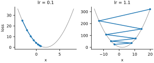
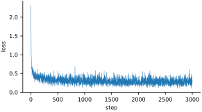
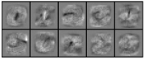
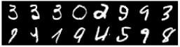

In the last chapter we found good weights by trial and error. Every guess was blind: we changed the weights at random and then checked whether things had improved. This chapter replaces blind guessing with something far better. For any setting of the weights, we will compute exactly which direction to move each of the 7,840 numbers to make the classifier a little less wrong. That direction is called the gradient. Repeatedly stepping along it, gradient descent, is the engine inside essentially every neural network trained today.
We will need MNIST again later in the chapter, so let’s load it now. This is the same data as in Chapters 8 and 10, flattened to 784 numbers per image and scaled to 0–1; this time we let PyTorch do the reshaping and wrap it in a small function, since we load two halves. The seed makes the random numbers repeatable. The device is picked exactly as in Chapter 10; every later chapter does it the same way, so we print those lines again only in the three chapters at the end of the book that start from a blank page, where each loader is shown complete.
import torch
from torchvision.datasets import MNIST
torch.manual_seed(0)
def load(train):
ds = MNIST('data', train=train, download=True)
X = ds.data.reshape(-1, 784).float() / 255.0
return X.to(device), ds.targets.to(device)
X, Y = load(train=True)
X_test, Y_test = load(train=False)
print(X.shape, X_test.shape, device)torch.Size([60000, 784]) torch.Size([10000, 784]) mps
Slopes for free
How steep is the curve at ? Nudge up by a small amount , see how much changes, and divide by to get the change per unit of nudge:
def f(x):
return x**2
for h in [0.1, 0.01, 0.001]: # smaller and smaller nudges
print(h, round((f(3 + h) - f(3)) / h, 6))0.1 6.1 0.01 6.01 0.001 6.001
The smaller the nudge, the closer the ratio comes to 6. That number is the slope, or derivative, of at 3: nudge up a little and goes up about six times as much. Its sign says which way is uphill. Try other points and a pattern appears: the slope of at any is . If you met derivatives at school, that is the rule you learned; if not, the nudge is all the definition you will need.
Working out derivatives by hand gets tedious quickly, and a neural network has thousands or millions of weights. PyTorch does it for us. Mark a tensor with requires_grad=True and PyTorch records every calculation done with it. Calling backward() on the result then runs the calculation in reverse and fills in the derivative. This is automatic differentiation, or autograd.
x = torch.tensor(3.0, requires_grad=True)
y = x ** 2
y.backward() # work out dy/dx
print(x.grad) # 2 * x = 6tensor(6.)
The chain rule, backwards
How does PyTorch know the derivative? It does not know any formula for the whole calculation. Instead it breaks the calculation into tiny steps, each of which it does know how to differentiate, and combines them with the chain rule: if affects and affects , then the effect of on is the effect of on times the effect of on .
Here is a one-weight “model” small enough to do by hand. It predicts for the input ; we wanted the answer , and the loss is the squared error :
w = torch.tensor(3.0, requires_grad=True)
x, y = 2.0, 10.0 # one input and the answer we want for it
p = w * x # prediction: 6
e = p - y # error: -4
loss = e ** 2 # 16
loss.backward()
by_hand = (2 * e) * 1 * x # dloss/de * de/dp * dp/dw
print(loss.item(), by_hand.item(), w.grad.item())16.0 -16.0 -16.0
With the prediction is 6, the error is and the loss is 16. Now walk backwards. The loss is , so it changes times as fast as . The error changes exactly as fast as (a factor of 1). And changes times as fast as . Multiply the three factors: . That is what backward() found too. The minus sign says that increasing lowers the loss, which is right: should grow toward 5.
That is all backward() does, however big the calculation. As the forward calculation runs, PyTorch records each step and what it was applied to. backward() then walks that record in reverse, from the loss back to the weights, multiplying the local slopes together along the way. Running the chain rule backwards like this is called backpropagation, and it costs only a small multiple of the forward calculation, typically two or three times as much, even with millions of weights.
A backward() of your own
This section is optional: it uses a little more Python than the rest of the book, and nothing later depends on it. There is nothing hidden in backward(), and you can build it yourself in a dozen lines. The Python you need: a class bundles some data with the functions that work on it; __init__ runs whenever a new one is made; and Python calls a class’s __mul__ when it sees a * b and its __add__ when it sees a + b. Finally, backward calls itself on each of the numbers it was made from, which is how it walks all the way back. A Value below is a number that remembers which numbers it was made from, and the local slope with respect to each. For a sum both slopes are 1; for a product the slope with respect to is , and with respect to is . backward adds the incoming slope to the number’s own grad and passes it on to its parents, multiplied by the local slope: the chain rule, one step at a time.
class Value:
"""A number that remembers how it was made, for backward()."""
def __init__(self, data, parents=(), slopes=()):
self.data, self.grad = data, 0.0
self.parents, self.slopes = parents, slopes # local derivatives
def __add__(self, other):
return Value(self.data + other.data, (self, other), (1.0, 1.0))
def __mul__(self, other):
return Value(self.data * other.data, (self, other),
(other.data, self.data))
def backward(self, grad=1.0):
self.grad += grad
for parent, slope in zip(self.parents, self.slopes):
parent.backward(grad * slope) # the chain ruleNow the one-weight model again, built from Values (subtracting 10 is written as adding , to keep the class small):
w, x, minus_y = Value(3.0), Value(2.0), Value(-10.0)
e = w * x + minus_y # error: 6 - 10 = -4
loss = e * e # 16
loss.backward()
print(loss.data, w.grad)16.0 -16.0
The same . Because e is used twice in e * e, its backward runs twice and the two contributions add up, which is how the chain rule handles a number that feeds into a calculation along more than one path. PyTorch’s autograd is this idea, written to work on whole arrays at once, to visit each step only once, and to know the slopes of hundreds of operations instead of two.
Rolling downhill
Here is gradient descent in its simplest form. We want the value of that makes as small as possible. We already know the answer is 2, but let’s pretend we don’t. Starting from , we repeatedly compute the slope and take a small step against it, which is downhill. The loop prints where is and how big the loss is there, before taking the step:
x = torch.tensor(-3.0, requires_grad=True)
lr = 0.1 # learning rate: how big a step
for step in range(31):
loss = (x - 2) ** 2 # smallest when x = 2
loss.backward() # slope is now in x.grad
if step % 5 == 0:
print(f'step {step:2} x = {x.item():7.4f}'
f' loss = {loss.item():7.4f}')
with torch.no_grad():
x -= lr * x.grad # step downhill
x.grad.zero_() # forget this gradientstep 0 x = -3.0000 loss = 25.0000 step 5 x = 0.3616 loss = 2.6844 step 10 x = 1.4631 loss = 0.2882 step 15 x = 1.8241 loss = 0.0309 step 20 x = 1.9424 loss = 0.0033 step 25 x = 1.9811 loss = 0.0004 step 30 x = 1.9938 loss = 0.0000
Each step moves by the slope times a small number called the learning rate. Far from the bottom the slope is steep and the steps are large; near the bottom the slope flattens and the steps shrink, so settles smoothly at 2.
The learning rate needs some care. To see why, here is the same loop packed into a function that records where has been, run with two learning rates:
def descend(lr, steps, start=-3.0):
x = torch.tensor(start, requires_grad=True)
path = []
for step in range(steps):
path.append(x.item())
loss = (x - 2) ** 2
loss.backward()
with torch.no_grad():
x -= lr * x.grad
x.grad.zero_()
return path
print([round(v, 2) for v in descend(lr=0.1, steps=8)])
print([round(v, 2) for v in descend(lr=1.1, steps=8)])[-3.0, -2.0, -1.2, -0.56, -0.05, 0.36, 0.69, 0.95] [-3.0, 8.0, -5.2, 10.64, -8.37, 14.44, -12.93, 19.92]
fig, axes = plt.subplots(1, 2, figsize=(4.6, 2.0))
for ax, lr in zip(axes, [0.1, 1.1]):
path = np.array(descend(lr, steps=8))
z = np.linspace(-16, 20, 200) if lr > 1 else np.linspace(-4, 8, 200)
ax.plot(z, (z - 2) ** 2, color='gray', linewidth=0.8)
ax.plot(path, (path - 2) ** 2, 'o-', markersize=3)
ax.set_title(f'lr = {lr}')
ax.set_xlabel('x')
axes[0].set_ylabel('loss')
plt.tight_layout()
plt.show()
With lr=0.1 each step covers a fifth of the remaining distance to 2. With lr=1.1 the step is so big that jumps clean over the bottom and lands higher up the other side, and each jump is bigger than the last: the loss grows instead of shrinking (Figure 11.1). Too small a learning rate wastes time; too large a one makes training blow up. Picking it is a matter of trying a few values.
Three details of the code will appear in every training loop in this book:
the update happens inside
torch.no_grad(), because the step itself is not part of the calculation we want derivatives of;the gradient is set back to zero after each step, since PyTorch would otherwise add each new gradient to the old one;
the quantity being minimized is called the loss.
To train a classifier we need the same three ingredients: weights with requires_grad, a loss that is small when the classifier is right, and the downhill step. The only new piece is the loss.
From scores to probabilities
Accuracy, the fraction of right answers, is what we care about, but it is a terrible thing to descend. Change one weight by a tiny amount and almost no answer flips, so the accuracy does not change at all and its slope is zero almost everywhere. We need a smooth measure of how right or wrong the classifier is.
Two functions from mathematics do the work, and it is worth meeting them first. The exponential , exp(x), raises the number to the power . It is always positive, it is 1 at , and it grows very fast: each step of 1 in multiplies it by about 2.7. The logarithm log undoes it: . For numbers between 0 and 1 the logarithm is negative, so is positive, and it is 0 for and grows without limit as approaches 0:
x = torch.tensor([-2.0, 0.0, 1.0, 2.0, 5.0])
print(torch.exp(x)) # always positive, grows fast
p = torch.tensor([1.0, 0.5, 0.1, 0.01, 0.0001])
print(-torch.log(p)) # 0 when sure, large when nottensor([ 0.135, 1.000, 2.718, 7.389, 148.413]) tensor([-0.000, 0.693, 2.303, 4.605, 9.210])
(The -0.000 is simply zero: , printed with the minus sign of the calculation that produced it.)
The first step is to turn the ten raw scores for each image into ten probabilities. The softmax function does this: exponentiate each score, so that every value is positive and bigger scores pull further ahead, then divide by the total so they add up to one.
def softmax(scores):
e = torch.exp(scores - scores.max(dim=1, keepdim=True).values)
return e / e.sum(dim=1, keepdim=True)
scores = torch.tensor([[2.0, 1.0, 0.1],
[0.0, 0.0, 5.0]])
p = softmax(scores)
print(p)
print(p.sum(dim=1))tensor([[0.659, 0.242, 0.099],
[0.007, 0.007, 0.987]])
tensor([1.000, 1.000])In the second row the third score is far ahead of the others, so softmax gives it almost all of the probability. Subtracting each row’s maximum score before exponentiating changes nothing mathematically, but it keeps exp from overflowing when scores are large.
Cross-entropy
Now the loss. For each image, look up the probability the classifier gave to the correct answer and take minus its logarithm. If the classifier was sure and right, the probability is near 1 and the loss is near 0. If it gave the right answer a probability near 0, the loss is huge. Averaged over a batch of images, this is the cross-entropy loss.
def cross_entropy(scores, labels):
# the logarithm of the softmax, computed safely
log_p = scores - scores.logsumexp(dim=1, keepdim=True)
rows = torch.arange(len(labels), device=labels.device)
return -log_p[rows, labels].mean() # one entry from each row
print(cross_entropy(scores, torch.tensor([0, 2]))) # both right
print(cross_entropy(scores, torch.tensor([2, 0]))) # both wrongtensor(0.215) tensor(3.665)
The expression log_p[rows, labels] is the paired indexing of Chapter 6: rows is and labels gives a column for each row, so it picks out the correct class’s entry from every row at once.
Why minus the logarithm, rather than, say, one minus the probability? Because it punishes confident mistakes without limit. Giving the right answer a probability of 0.01 costs 4.6; giving it 0.0001 costs 9.2. A classifier cannot get away with being sure and wrong. (There is a deeper reason, from information theory, that gives cross-entropy its name, but we will not need it.)
The next paragraph is a numerical-safety detail, safe to skip. We compute the logarithm of the softmax directly, as each score minus the log of the sum of the exponentials (logsumexp). This is mathematically the same as softmax(scores).log() but never takes the logarithm of a number that has rounded down to zero. PyTorch has its own version, and ours agrees with it:
import torch.nn.functional as F
labels = torch.tensor([0, 2])
print(cross_entropy(scores, labels))
print(F.cross_entropy(scores, labels))tensor(0.215) tensor(0.215)
Note what both functions take as input: the raw scores, not probabilities. Cross-entropy applies the softmax itself. Passing scores that have already been through a softmax would apply it twice. Training still more or less works if you do that by mistake, which is exactly why the bug is so common and so easy to miss.
The slope of cross-entropy, by hand
Autograd will give us the gradient of the cross-entropy loss, but it is worth knowing what it is, because the answer is beautifully simple. For one image with pixels , scores and softmax probabilities , the slope of the loss with respect to each score, that is, how fast the loss changes if only score is nudged, is The curly is the usual way to write “the slope with respect to one number while the others stay put.” Here is not the label itself but its one-hot form, ten numbers with a 1 for the correct class and 0 for the others (F.one_hot makes it). In words: push down each wrong class’s score by the probability it was given, and push up the correct class’s score by the probability it was not given. (Getting there takes a few lines of the chain rule through the logarithm and the exponentials; the minus-log and the exponential undo each other almost perfectly, which is one reason this pair of functions is used together.) Since , the slope for the weight joining pixel to class is , averaged over the batch. We check the formula two ways: against autograd, and against the oldest test of a slope there is, nudging one weight and watching the loss move.
x5, y5 = X[:5], Y[:5] # five images
W = 0.01 * torch.arange(7840.0, device=device).reshape(784, 10).sin()
# (any small, varied weights will do; these are simply repeatable)
W.requires_grad_()
loss = cross_entropy(x5 @ W, y5)
loss.backward() # autograd's answer
p = (x5 @ W).softmax(dim=1) # probabilities
onehot = F.one_hot(y5, 10).float()
by_hand = x5.T @ (p - onehot) / 5 # the formula: x (p - y)
print((W.grad - by_hand).abs().max().item())
with torch.no_grad(): # nudge one weight a little
W2 = W.clone()
W2[300, 3] += 1e-3
change = cross_entropy(x5 @ W2, y5) - cross_entropy(x5 @ W, y5)
print(change.item() / 1e-3, by_hand[300, 3].item())2.9802322387695312e-08 0.04124641418457031 0.041017886251211166
The formula is the line x5.T @ (p - onehot) / 5. Row of x5.T is pixel in each of the five images, so the matrix product multiplies by for every image and adds up over the five, giving one slope for every pixel and class: a array, the shape of . The formula agrees with autograd to the last digit 32-bit numbers can hold. Nudging weight by a thousandth changes the loss by 0.0412 per unit, against the formula’s 0.0410: as close as a finite nudge, and 32-bit arithmetic, allow. Notice also what the formula says about learning. A pixel that is 0 in an image () gets no update at all from that image, and an image the network already classifies confidently and correctly () hardly moves the weights. Learning is driven by mistakes, in proportion to their size.
Training a classifier
We train on small random batches of images rather than all 60,000 at once. The gradient from 128 images is a noisy but perfectly usable estimate of the gradient from all of them, at a tiny fraction of the cost. This is stochastic gradient descent (SGD).
Before training, we set aside the last 10,000 training images as a validation set. We never train on them; we use them to watch progress while we experiment. The test set stays locked away until the very end, so that the final test number is an honest estimate of how the classifier does on images that played no part in any of our decisions.
X_val, Y_val = X[50_000:], Y[50_000:] # held back to check progress
X, Y = X[:50_000], Y[:50_000] # used for training
print(X.shape, X_val.shape)torch.Size([50000, 784]) torch.Size([10000, 784])
get_batch draws a random batch of training images, and we also need an accuracy function that works on raw scores.
def get_batch(X, Y, batch_size):
i = torch.randint(len(X), (batch_size,), device=X.device)
return X[i], Y[i]
def accuracy(scores, Y):
return (scores.argmax(dim=1) == Y).float().mean().item()The model is the same matrix multiplication as in Chapter 10, with one addition: a bias for each class, a number added to its score whatever the input. It is the in . We keep the weights in a list w so that the training loop can update all of them the same way.
def model(x, w):
return x @ w[0] + w[1]
w = [(0.01 * torch.randn(784, 10, device=device)).requires_grad_(),
torch.zeros(10, device=device, requires_grad=True)]And here is the whole training loop. Every 500 steps it prints the loss on the current batch and the accuracy on the validation set, computed inside torch.no_grad() since checking needs no gradients:
lr = 0.5
losses = []
for step in range(3001):
x, y = get_batch(X, Y, 128)
loss = cross_entropy(model(x, w), y)
loss.backward()
with torch.no_grad():
for p in w:
p -= lr * p.grad
p.grad.zero_()
losses.append(loss.item())
if step % 500 == 0:
with torch.no_grad():
acc = accuracy(model(X_val, w), Y_val)
print(step, round(loss.item(), 3), round(acc, 4))0 2.322 0.4427 500 0.289 0.9167 1000 0.344 0.9209 1500 0.227 0.9204 2000 0.293 0.9223 2500 0.327 0.924 3000 0.298 0.9265
After the first 500 steps the classifier is already right on 92 percent of the validation images, and it ends a little higher, at 92.7 percent: better than the hand-made templates of Chapter 8 (82 percent) or evolution in Chapter 10 (77 percent), in a fraction of the time. One complete pass through the training set is called an epoch. Three thousand batches of 128 images is 384,000 images, which is about eight epochs of our 50,000 training images. Only about, because get_batch draws images at random, so some images turn up more often than others and a few may not turn up at all. On average it comes to the same thing.
The loss on each batch jumps around because every batch is different, but the trend is unmistakable (Figure 11.2).
plt.figure(figsize=(4.6, 2.4))
plt.plot(losses, linewidth=0.5)
plt.xlabel('step')
plt.ylabel('loss')
plt.show()
What did it learn?
As in the last chapter, each column of the weight matrix can be drawn as an image (Figure 11.3). The contrast with the noisy evolved weights of Figure 10.1 is striking.
columns = w[0].T.reshape(10, 28, 28).detach().cpu().numpy()
montage_plot(columns, grid_shape=(2, 5), symmetric=True)
These are templates again, but sharper than averages. The 0 is a bright ring with a dark center, because ink in the middle is evidence against a zero. The weights for each digit emphasize whatever distinguishes it from the others. Nobody designed them; they are what rolling downhill on the cross-entropy produced.
Looking at the mistakes is just as instructive:
with torch.no_grad():
guesses = model(X_val, w).argmax(dim=1)
wrong = (guesses != Y_val).nonzero().flatten()[:16]
print((guesses != Y_val).sum().item(), 'mistakes out of', len(Y_val))
print('guessed:', guesses[wrong].tolist())
print('actual: ', Y_val[wrong].tolist())
images = X_val[wrong].reshape(-1, 28, 28).cpu().numpy()
montage_plot(images, size=4.6, grid_shape=(2, 8))735 mistakes out of 10000 guessed: [5, 6, 5, 5, 6, 8, 4, 8, 1, 1, 4, 4, 6, 3, 7, 5] actual: [3, 3, 3, 0, 2, 9, 9, 3, 9, 4, 1, 9, 4, 5, 9, 8]

Some of these would trouble a person too. Others are clear to us but fool a classifier that can only add up pixels independently. A digit drawn a little off center, or with an unusual slant, puts its ink on pixels that the weights for its class do not expect. Overcoming that limitation is what the rest of this book is about.
Letting PyTorch take the step
The update step we wrote by hand is so common that PyTorch packages it as an optimizer. torch.optim.SGD does exactly what our loop did:
w = [(0.01 * torch.randn(784, 10, device=device)).requires_grad_(),
torch.zeros(10, device=device, requires_grad=True)]
optimizer = torch.optim.SGD(w, lr=0.5)
for step in range(3001):
x, y = get_batch(X, Y, 128)
loss = cross_entropy(model(x, w), y)
optimizer.zero_grad()
loss.backward()
optimizer.step()
with torch.no_grad():
print(round(accuracy(model(X_val, w), Y_val), 4))0.923
The pattern of zero_grad(), backward(), step() is the heartbeat of PyTorch training, and you will see it in every remaining chapter. It reaches 92.3 percent on the validation set, the same as our hand-written loop to within the noise of the random batches.
The advantage of the optimizer object is that a cleverer update rule is one line away. Adam keeps a running average of past gradients for each weight and adapts each weight’s step size; it is the most widely used optimizer in deep learning.
A simpler improvement, which SGD offers as an option, is momentum: torch.optim.SGD(w, lr=0.05,
momentum=0.9) makes each step a running blend of the current gradient and the previous steps, like a ball that keeps rolling in the direction it was already going. Noise from individual batches partly cancels out, and the steady downhill direction builds up speed. Adam includes the same idea.
w = [(0.01 * torch.randn(784, 10, device=device)).requires_grad_(),
torch.zeros(10, device=device, requires_grad=True)]
optimizer = torch.optim.Adam(w, lr=0.01)
for step in range(3001):
x, y = get_batch(X, Y, 128)
loss = cross_entropy(model(x, w), y)
optimizer.zero_grad()
loss.backward()
optimizer.step()
with torch.no_grad():
print(round(accuracy(model(X_val, w), Y_val), 4))0.9234
On a problem this simple, Adam and plain SGD end up in about the same place, 92.3 percent on the validation set. We will reach for Adam whenever the problems get harder.
Our experiments are finished, so now, and only now, we look at the test set. The model in w is the last one we trained, with Adam:
with torch.no_grad():
print('test', round(accuracy(model(X_test, w), Y_test), 4))test 0.9204
A linear classifier, a single matrix multiplication trained by gradient descent, gets 92 percent of handwritten digits it has never seen right. To do better we need to stop treating each pixel as an independent vote. We need layers.